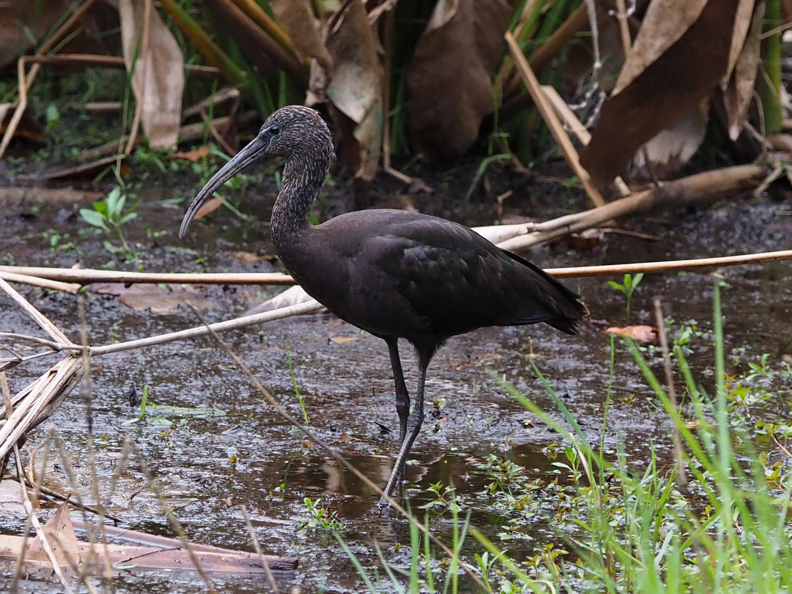

Plegadis falcinellus — الأنوق اللامع وطيور الأراضي الرطبة
الاسم والهوية
أبو منجل اللامع، ويسمى أيضًا الأنوق اللامع في المراجع الكويتية، نوع من فصيلة أبي منجل وأبي ملعقة Threskiornithidae، ضمن رتبة البجعيات Pelecaniformes. تعتمد قائمة AviList لعام 2026 الاسم العلمي Plegadis falcinellus. يمتد انتشاره عبر أجزاء من أوراسيا وإفريقيا وأسترالاسيا والأمريكتين؛ لذلك لا يصح اختزال كل تجمعاته في مسار هجرة واحد، أو اعتبار مشاهدة طائر في موقع جديد دليلًا على استقراره فيه. ويسميه الدليل اللبناني «أبو منجل اللماع».
كيف نميّزه؟
يبدو داكنًا من بعيد، لكن الإضاءة الجيدة تكشف جسمًا كستنائيًا وأجنحة ذات لمعان أخضر وبرونزي. المنقار طويل مقوس إلى أسفل، والعنق والرجلان طويلان؛ وفي الطيران يمد عنقه إلى الأمام، بخلاف البلشونات التي تطويه. الجنسان متشابهان في الريش ولا يحدد الجنس بثقة من صورة عادية. تبدو الطيور اليافعة أكثر بنية وأقل لمعانًا، مع تخطيط فاتح على العنق؛ ويبهت لون البالغ خارج موسم التكاثر أيضًا. رأسه المكسو بالريش يفرقه عن أبي منجل الأصلع الشمالي، ولا يكفي اللون الأسود الظاهر لتعيين النوع.
الموطن والغذاء والسلوك
يرتاد المستنقعات والبرك الضحلة والسهول المغمورة والحقول الرطبة، ويستخدم مياهًا عذبة وأخرى شروبًا. يغرس منقاره في الطين أو يلتقط الفرائس من الماء والسطح؛ وتشمل غذاءه الحشرات ويرقاتها والديدان والرخويات والقشريات، مع فرائس مائية صغيرة أخرى. يعيش اجتماعيًا، وقد يتغذى ويبيت مع أفراد نوعه وطيور مائية أخرى. لا يعادل وجوده قرب حقل زراعي إثبات منفعة زراعية كمية؛ الأوضح أنه جزء من الشبكة الغذائية للأراضي الرطبة، وأنه يعتمد على توافر الماء والطين القابل للاختراق.
التكاثر والحركة
يعشش في مستعمرات، وقد يشارك البلشونات مواقع التعشيش. يبني الزوج منصة من الأغصان والنباتات في شجيرة أو شجرة أو بين القصب، ويشارك الأبوان في رعاية الحضنة. يتبع توقيت التكاثر الظروف المحلية، فلا يُنقل تقويم منطقة إلى جميع البلدان العربية. تستطيع الطيور الانتشار بعيدًا بعد التكاثر، إلى جانب الهجرة الموسمية لبعض التجمعات. أظهرت دراسات التحجيل صلات بين مستعمرات شمال الجزائر ومواقع في غرب المتوسط، ما يبرز قيمة شبكة الأراضي الرطبة المتصلة بدل حماية بقعة منفردة فقط.
الانتشار العربي ومعنى مشاهدته في نوفمبر
يعطي دليل طيور لبنان، الطبعة الثانية المنشورة في يونيو 2026، صورة أحدث: متكاثر صيفي محلي وغير منتظم في المنصورة، وعابر غير شائع في الأراضي الرطبة الساحلية والداخلية؛ ولا يصفه بزائر شتوي منتظم. في الكويت هو عابر غير شائع وشتوي نادر، بينما تصنفه قاعدة طيور عُمان عابرًا وزائرًا شتويًا وفيرًا. وفي المغرب والجزائر توجد مواقع تكاثر موثقة، إلى جانب الحركة الموسمية؛ ووُثق تكاثر في سبخة بوعرك بالمغرب سنة 2024. لذلك تلائم مادة نوفمبر موسم الشتاء في عُمان، لكنها لا تعني أن نوفمبر موسم وفرة له في لبنان، ولا أن كل طيور شمال إفريقيا مهاجرة وافدة.
الحفظ والمشاهدة المسؤولة
حالته العالمية أقل إثارة للقلق LC، وليست ضمانًا لسلامة كل تجمع محلي. تجفيف المستنقعات وتلوث المياه والمبيدات وإزعاج المستعمرات والقتل تهديدات تستدعي الانتباه. تفيد حماية الضفاف والقصب ونوعية المياه ومواقع المبيت، مع تصوير الطيور من مسافة لا تغير سلوكها. لا تُقتحم المستعمرة للحصول على صورة، ولا يُستنتج من حالة الحفظ العالمية حكم قانوني على الصيد في أي بلد.
المراجع
AviList Core Team — AviList v2026, 20 October 2026.
Cornell Lab of Ornithology — All About Birds: Glossy Ibis, identification and life history.
Ramadan-Jaradi et al. — Updated checklist of the birds of Lebanon, Sandgrouse 42, 2020.
Kuwait Ornithological Rarities Committee — Kuwait Bird List; Kuwait Birds: Glossy Ibis.
Birds of Oman — national species database.
Blowin’ in the wind: dispersal of Glossy Ibis in the western Mediterranean, 2023.
Azaouaghe & Oujidi — Nidification de l’Ibis falcinelle dans le nord-est du Maroc, Go-South Bulletin 21, 2024.
Ramadan-Jaradi & Itani — Birds of Lebanon: A Photographic Guide to 409 Species, second edition, UNDP, June 2026.
الصورة: Zygy — CC0-1.0.